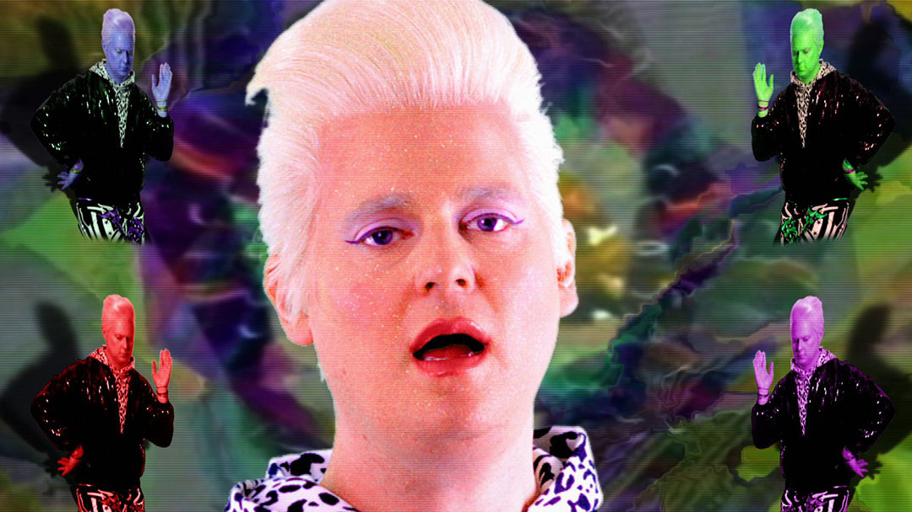

Timothy Richard "Tim" Heidecker (born February 3, 1976) is an American comedian, writer, director, actor, and musician. He is best known as one half of the comedy duo Tim & Eric, along with Eric Wareheim. They are noted for creating the television shows Tom Goes to the Mayor, Tim and Eric Awesome Show, Great Job!, and Tim & Eric's Bedtime Stories.
Heidecker has also acted in several films, including Bridesmaids (2011), Tim and Eric's Billion Dollar Movie, and The Comedy (both 2012); he received critical acclaim for the latter. He currently co-hosts the parodic film review web series On Cinema and stars in the comedy series Decker, both alongside Gregg Turkington.
Heidecker was born and raised in Allentown, Pennsylvania. He attended Allentown Central Catholic High School and Temple University.
Heidecker and Wareheim first became known as the creators, writers, and stars of Tom Goes to the Mayor, a limited animation series that originally aired from November 2004 to September 2006 on the Adult Swim channel. Tim plays "Tom," the protagonist of the show. He continually brings his ideas to the Mayor (played by Wareheim), who ends up thwarting them in most cases and leaving Tom worse off than when he started. According to their website Wareheim and Heidecker had mailed copies of an early version of the show to comedian Bob Odenkirk, who agreed to take on the project as the executive producer of the series and sold it to Adult Swim.
The duo's next show, Tim and Eric Awesome Show, Great Job!, premiered on February 11, 2007 on Adult Swim. The eleven-minute show features "live action, sketch, animation, emotions, phone calls, love, etc." Heidecker starred in Tim and Eric's Billion Dollar Movie. Wareheim and Heidecker appeared together as Debt Collectors on the Adult Swim special, The Young Persons Guide to History and have made guest appearances in the movie Let's Go to Prison, as well as the Scottish video game series VideoGaiden and a Version 2 episode of Mega64.[3] Heidecker also had a small role in the 2011 film Bridesmaids, and a leading role in the 2012 independent drama The Comedy, directed by Rick Alverson and also starring Wareheim. In July 2012, Heidecker starred in an episode of Workaholics. In August 2012, he guest starred in Dinosaur Jr.'s music video "Watch the Corners."[4] In the same year, Heidecker made a cameo appearance on the independent movie reviewing site, Red Letter Media. Heidecker appeared in an episode of the RedLetterMedia series, "Half in The Bag." The episode is titled, "Season Finale: Step Up Revolution." Within the short sketch comedy, Heidecker plays a VCR repair man named "Tim". Shortly after his introduction into the scene, he flies through the ceiling and makes his exit from the skit.
Heidecker starred in a series of films for Absolut Vodka's website with Wareheim and Zach Galifianakis. In March 2010, Heidecker and Wareheim directed a series of Old Spice commercials starring actor Terry Crews. Using characters and skits from Awesome Show, Heidecker and Wareheim (via their Abso Lutely Productions company) created an online-only show called "Tim and Eric Nite Live!," originally broadcast on the website SuperDeluxe. Since 2012 Heidecker has been hosting a parodic web series and podcast called On Cinema, where he and special guest (Gregg Turkington) discuss films from past and present. In 2013 an On Cinema Film Guide app was released, featuring the voices of Heidecker and Turkington reviewing over 17,000 films.
Heidecker, Wareheim, Sarah Silverman, Michael Cera, and Reggie Watts announced on the podcast Comedy Bang! Bang! that they were starting a comedy YouTube channel called Jash.
The duo's most recent show, Tim and Eric's Bedtime Stories premiered on Adult Swim on September 18, 2014.
Eric Alexander Wareheim (born April 7, 1976) is an American actor, comedian, writer, director, and musician. He is one half of the comedy duo Tim & Eric, alongside Tim Heidecker. They created the television shows Tom Goes to the Mayor, Tim and Eric Awesome Show, Great Job!, Check It Out! with Dr. Steve Brule, and Tim and Eric's Bedtime Stories. He has a recurring role on the Netflix series Master of None.
Wareheim was born in Audubon, Pennsylvania. He graduated from Methacton High School in Norristown, Pennsylvania and then later attended Temple University, where he met his comedy partner Tim Heidecker and produced his first film about dads, shot on the Jersey shore.
Wareheim and Heidecker are the creators, writers, and stars of Tom Goes to the Mayor, a limited animation that was on the Adult Swim programming block on Cartoon Network. Wareheim and Heidecker had mailed copies of an early version of the show to comedian Bob Odenkirk, who agreed to take on the project as the executive producer of the series and sold it to Cartoon Network.[2] Wareheim played "The Mayor", an official who always managed to destroy Tom's well-intentioned plans often along with the entire town as well.
The Tim and Eric name was solidly branded with the release of Tim and Eric Awesome Show, Great Job! which premiered on February 11, 2007. The show is a mix of "live action, sketch, animation, emotions, phone calls, love, etc." according to their website. The creators have described the show as the "nightmare version of television." On May 2, 2010 the "Man Milk" episode of "Tim and Eric Awesome Show, Great Job!" wrapped Season 5 of the show. Though this would be the last serial content for "Tim and Eric Awesome Show, Great Job!" there was an hour-long holiday program titled "Chrimbus Special" that gave fans a last glimpse at the TV program. It was the second show Wareheim both produced and starred in which aired during Cartoon Network's Adult Swim block.
Wareheim played in several Philadelphia area bands, including the new wave punk band Twelve Tone System, of which Tim Heidecker was also briefly a member. Wareheim briefly played backup guitar for the duo Adam and Justine in the 1990s. Wareheim was also the principal songwriter for The Science Of and had been a member of Elements of Need, I Am Heaven, and briefly with the Vampire-themed punk band Ink & Dagger He currently is involved with the band Sola.
Wareheim made an appearance in Aqua Teen Hunger Force as the Germ-Master, along with Heidecker as a basketball. Wareheim, along with Tim Heidecker, also directed the 2010 Super Bowl commercial, The Shuffle, for Boost Mobile and most recently a series of Old Spice commercials with actor Terry Crews. They also made an appearance in an episode of The Simpsons as Amus Bruse and Fois Garth. Wareheim and Heidecker appeared together as Debt Collectors on the Adult Swim special, The Young Persons Guide to History and have made guest appearances in the movie Let's Go to Prison, as well as the Scottish video game series VideoGaiden and a Version 2 episode of Mega64.[5] Wareheim also played a recurring role in Michael Cera's and Clark Duke's Internet TV show Clark and Michael as Randy, the neighbor of the titular duo.[6] Using characters and skits from Awesome Show, Heidecker and Wareheim (via their Abso Lutely Productions company) created an online-only show called Tim and Eric Nite Live!, originally broadcast on the website SuperDeluxe. In 2015, Wareheim co-starred as Arnold Baumheiser in the Netflix comedy series Master of None. He appeared in six episodes and directed four episodes of the first season. In 2017, he appeared in seven episodes and directed a single episode of the show's second season.
Tim and Eric meet at Temple University
Sent tape of skits to Bob Odenkirk
Tom Goes to the Mayor premiers

Tim & Eric Awesome Show, Great Job!

Check it Out! with Dr. Steve Bule

Tim & Eric's Billion Dollar Movie

The Comedy
Tim & Eric's Bed Time Stories Pilot:
Haunted House
Ft. Zach Galafianakis

Tim & Eric's Bed Time Stories
Tim & Eric's Billion Dollar Movie